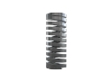
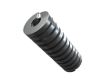
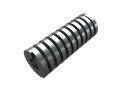

Пружины прямоугольного сечения
Изготовление винтовых пружин прямоугольного сечения на заказ партиями от 1-й штуки от 1-го дня.
Выполним по разнообразным параметрам, чертежам или образцу, фото, эскизам.
(сроки выполнения заказа обговариваются с каждым клиентом индивидуально)
- 
- 
- 
Изготовление пружин прямоугольного сечения
Не знаете где заказать и купить пружины прямоугольного сечения? Производственная компания ООО "Индустриал Спрингс", работающая на рынке Украины более 10 лет в области изготовления и реализации винтовых пружин, оказывает услуги проектирования и производства пружин прямоугольного сечения с разнообразными размерами, техническим характеристиками и геометрическими формами.
Пружины прямоугольного сечения занимают промежуточную позицию между пружинами круглого сечения и тарельчатыми пружинами. Имея высокую жёсткость и обеспечивая высокую нагрузку при малых деформациях, пружины прямоугольного сечения сочетают преимущества обеих классов пружин - эксплоутационную надёжность пружин круглого сечения и компактные размеры, характерные тарельчатым пружинам.
Используя качественные стали (углеродистые, легированные, специальные теплостойкие и нержавеющие), а также профессиональное оборудование, наша компания изготавливает винтовые пружины по всем нормам ГОСТа, которые сохраняют пружинящие свойства детали на протяжении всего периода эксплуатации. Заказать и купить пружины прямоугольного сечения вы можете по доступной цене в розницу и оптом, указав необходимый диаметр проволоки, диаметр и высоту пружины, а также количество полных витков и материал. Для оформления заказа или консультации свяжитесь с нами через форму заявки или по одному из телефонов: 066 283 80 82, 097 305 81 85, 0532 591 590.